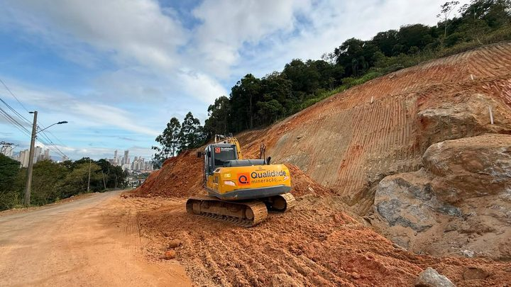
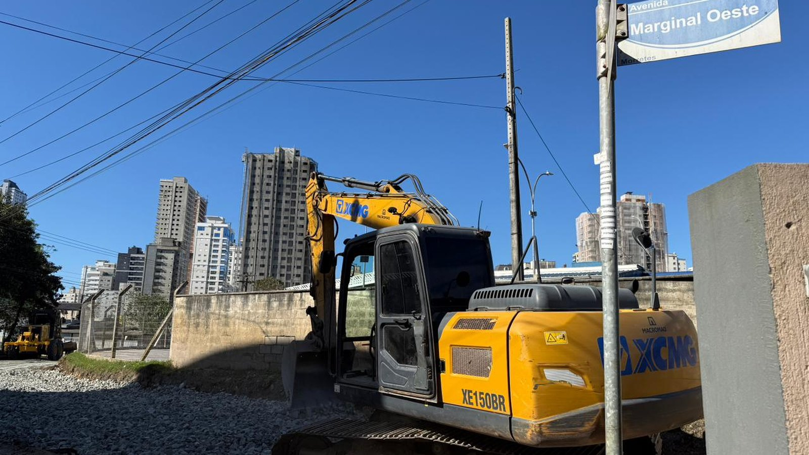
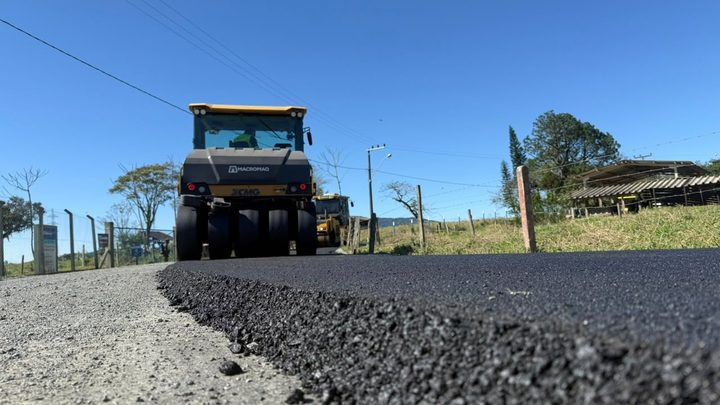

Itapema · TrânsitoDetonação de rochas fecha o Morro do Encano nesta sexta, e o bloqueio deve durar o dia inteiro
Outra frente de obra da Prefeitura de Itapema nesta semana.
O asfalto vem depois da nova adutora e da ampliação das redes de água e esgoto feitas pela Conasa. A via ainda vai receber sinalização.
Em 30 segundos · Modo de Leitura, formato original Santa Informa
A Prefeitura de Itapema vai asfaltar um trecho da Marginal Oeste.
É no bairro Morretes, entre as ruas 424 e 444.
Antes do asfalto veio a drenagem, já concluída.
A drenagem pegou o trecho entre as ruas 422 e 440.
Ali existia uma vala, que agora virou tubulação.
Foram 400 metros de tubo de 80.
E mais 300 metros de tubo de 40.
Somados, 700 metros de tubulação nova.
No mesmo período a Conasa implantou uma adutora nova.
As redes de água e esgoto também foram ampliadas.
Agora falta terminar a base e a sub-base.
Depois do asfalto vem a sinalização da via.
InfraestruturaPublicada em Redação Santa Informa

A Prefeitura de Itapema prepara a pavimentação de um trecho da Marginal Oeste, no bairro Morretes, entre as ruas 424 e 444. O anúncio saiu no site da própria Prefeitura em 3 de setembro. A via vai receber asfalto depois que terminarem as etapas de preparação da base e da sub-base, que é a camada que fica embaixo de tudo e segura o peso do que passa em cima.
Antes do asfalto, a Prefeitura fez uma drenagem pluvial nova no trecho entre as ruas 422 e 440. O serviço pegou uma vala que existia no local e transformou em tubulação enterrada. Foram instalados 400 metros de tubo de 80 e outros 300 metros de tubo de 40, o que dá 700 metros de tubulação nova. A Prefeitura não informou a unidade dessas medidas de 80 e 40.
Segundo o secretário de Obras e Serviços Públicos, Jean Idimar, a ordem dos serviços não foi por acaso. "Ali existia uma vala que precisava ser resolvida antes da pavimentação. Fizemos toda a tubulação nova para dar mais vazão à água da chuva e evitar que ela ficasse acumulada na via", disse. A drenagem foi feita antes do asfalto justamente para não precisar abrir a rua de novo depois de pronta.
Enquanto a obra de drenagem corria, a região recebeu investimentos da Conasa, a concessionária de água e esgoto. Foi implantada uma nova adutora, que é a tubulação grossa que leva água de um ponto a outro do sistema, e as redes de água e esgoto foram ampliadas. O secretário afirmou que também foi preciso esperar essa etapa terminar antes de avançar para o asfalto.
Com a parte de baixo resolvida, a Prefeitura passa a preparar o trecho para receber o asfalto. Depois da pavimentação, a via ainda deve ganhar sinalização e outras medidas de segurança para motoristas, ciclistas e pedestres. Para o prefeito Alexandre Xepa, a obra atende uma queixa antiga. "Os moradores do Morretes convivem há bastante tempo com buracos, poeira e dificuldades para circular por esse trecho", afirmou.
A Marginal Oeste é usada todo dia por quem mora, trabalha e passa pelo Morretes, um bairro que cresceu rápido e ainda tem rua sem asfalto. Trecho de terra com vala aberta costuma virar dois problemas de uma vez: poeira no tempo seco e água parada no tempo de chuva. Resolver a drenagem antes do asfalto é o jeito mais barato de fazer, porque evita quebrar a rua nova meses depois.
O resumo de 30 segundos está no topo e a versão completa é o texto acima. Aqui ficam as três leituras da casa sobre o mesmo assunto.
Clara, a otimista
Fazer a drenagem antes do asfalto é sinal de obra pensada. Rua nova que alaga na primeira chuva forte vira remendo em poucos meses, e aqui a ordem foi respeitada.
E o pacote veio junto: tubulação, adutora, rede de água e rede de esgoto no mesmo período. O morador do Morretes vai sentir a diferença na poeira, na lama e no tempo que leva para sair de casa.
Seu Prudêncio, o criterioso
Merece atenção o que não foi dito. A Prefeitura anuncia a pavimentação, mas não divulga data de início, data de entrega nem o valor da obra. Sem prazo publicado, não há como o morador cobrar depois.
Vale acompanhar também a medida dos tubos. O texto fala em tubo de 80 e tubo de 40 sem dizer a unidade, e essa informação é o que permite avaliar se a vazão dá conta do volume de chuva da região. É o tipo de detalhe que faz falta num anúncio de obra de drenagem.
Feita a ressalva, a sequência escolhida está correta. Drenagem, adutora e redes primeiro, asfalto depois. Quem já viu rua recém-asfaltada ser aberta para passar tubo sabe o quanto essa ordem economiza dinheiro público.
Caco, o sarcástico
O Morretes vai trocar o buraco pelo asfalto. Uma troca justa, convenhamos.
A vala que juntava água virou 700 metros de tubo. A água agora corre escondida, com mais discrição, do jeito que a gente sempre quis.
Falta só a data. Mas a poeira do Morretes já esperou tanto tempo que mais um pouquinho ela aguenta em pé.
Fontes: Prefeitura de Itapema, publicada em 3 de setembro de 2026, de onde saem o trecho da pavimentação entre as ruas 424 e 444, a drenagem entre as ruas 422 e 440, os 400 metros de tubo de 80 e os 300 metros de tubo de 40, a vala transformada em tubulação, a implantação da nova adutora e a expansão das redes de água e esgoto pela Conasa, as falas do secretário de Obras e Serviços Públicos, Jean Idimar, e do prefeito Alexandre Xepa, e a previsão de sinalização depois do asfalto. A foto do topo é da mesma página.

Itapema · TrânsitoOutra frente de obra da Prefeitura de Itapema nesta semana.

Itapema · InfraestruturaComo foi a última pavimentação entregue pelo município.
 Itapema · Infraestrutura
Itapema · InfraestruturaO programa que vem asfaltando rua por rua na cidade.